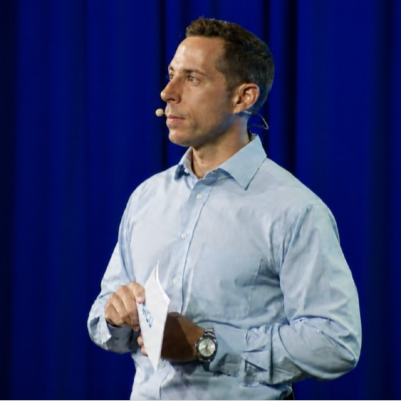

Prepare the ground.
I begin with the work as it exists. I talk to learners and staff, look at the evidence on hand, and take stock of the constraints. The team can then agree on the problem and choose what to tackle first.
Biography
I lead academic programs and build AI-enabled learning products. The work can be as simple as helping a learner see what to practice next or helping an educator understand whether a course is working.
Most of my career has been in higher education and workforce development. Product work grew out of the same question: how do you turn a good idea into something that works for the person on the other end?
Practice
The tree on the home page is a map of how I work. The roots are the people and limits a team needs to understand before moving. The trunk and branches are the program, product, or partnership the team builds. The nest gives people a place to test the work, get feedback, and make changes. The birds are people using the work on their own.
I begin with the work as it exists. I talk to learners and staff, look at the evidence on hand, and take stock of the constraints. The team can then agree on the problem and choose what to tackle first.
I put rough briefs and prototypes in front of the people who have to make them work. Educators, designers, engineers, and partners do not see the same risks. I make those differences visible, establish a direction, and keep the team moving.
The nest and eggs mark the point where a new idea needs to hold up. I put early versions in front of the people who will use them before we invest more in the work. We look for where people get stuck, what they ignore, and what begins to work. Then the team decides what to revise or whether the idea needs more time.
A project is ready when people can use it without the original team standing over it. We launch, watch the work in use, and stay close enough to correct problems. If a product still needs help, we give it another cycle.
Professional experience
My roles have included product leadership, learning innovation, workforce development, and academic operations. In each setting, the task has been to help a team move an idea from conversation into a program, product, or service people can use.
The role brings program strategy, personalized learning design, and hands-on assessment together for a business portfolio.
Academic leadership and learning systems
As Interim Chair of Communications, Humanities, and Arts, I worked with more than 90 faculty across five campuses and online during unionization and a presidential transition. The Associate Dean role extended that work to workforce-aligned programs, faculty development, and external partnerships.
Academic change management and workforce leadership
With workforce partners, we co-designed learning platforms and credential pathways that connected skill development to employer needs.
Product, partnerships, and workforce learning
I led experiential learning and student professional development, working with employers to build applied opportunities.
Experiential learning at scale
At Albright College, I led Music Industry Studies with a department of 8 full-time and 12 adjunct faculty. As Associate Dean, I worked with 7 direct reports and 12 staff across career development, experiential learning, student employment, and the 13th Street Educational Partnership.
Academic operations, creative education, and career development
Reading Samba School brought musicians, local audiences, and cultural organizations together through public performances and partnerships.
Civic arts leadership and community engagement
Projects began with research into the client and their audience, then developed into live experiences people could take part in and remember.
Live experience design and production
A second practice
Years spent performing, writing, arranging, and making records taught me how an early idea becomes a finished product or performance: through rehearsal, collaboration, and careful craft.
An arrangement gives an ensemble a shared score: melody, harmony, form, and instrumentation. Musicians work out the phrasing, articulation, tempo, balance, tone, and dynamics in rehearsal. Those choices carry into performance and give the piece its character.
That experience informs how I lead programs, products, and teams. I start with research and established practice, then set clear constraints so people can use their judgment and experience to shape work for the audience it serves.
View selected music creditsSelected work
Selected work in writing, performance, program development, and community practice.

Performance work has included commissions, premieres, recordings, and the community work of Reading Samba School.
Writing and presentations on experiential learning, workforce development, AI, and academic leadership.
Sound Masses and Wine Glasses brought together original music, performance, and glass art in 2019. My work also includes commissions from Casey Cangelosi, Pius Cheung, Igor Silva, and Justin Raines; premieres for multi-percussion, marimba, and cimbalom; and a masterclass at the International Percussion Festival in Córdoba, Argentina.
Named 2025 Educator of Note by the Central Pennsylvania Music Hall of Fame and a five-time quarterfinalist for the GRAMMY Music Educator Award; recognized in 2024 as a Campus Sustainability Champion by the Pennsylvania Environmental Resource Consortium. My civic work includes Reading Samba School, Recycle Bicycle Harrisburg, SCPa Works, PaArtners, Berks JazzFest, and regional technology and marketing organizations.
Resource development
I have written grants, built budgets, and worked with partners and grants offices to fund workforce programs.
$399,896
Grant development lead · 2025
Led the research, budget development, and grants-office coordination for a cybersecurity apprenticeship initiative funded through a $399,896 Pennsylvania Department of Labor & Industry award to SCPa Works.
$750K
Grant development lead · 2024
Led the research, budget development, and grant-development work for this four-year USDA NIFA-funded workforce and education initiative for controlled-environment agriculture.
$614,917
Principal Investigator · 2025
Served as Principal Investigator for this U.S. Department of Education Strengthening Institutions Program award to Harrisburg University.
$25K
Grant development lead · 2022
Led research, budget development, and application planning for a consultant engagement supporting the partnership.
$1,106
Reading Samba School recipient · 2017–18
Reading Samba School received funding for community music education and performance, alongside support from the Reading Musical Foundation.